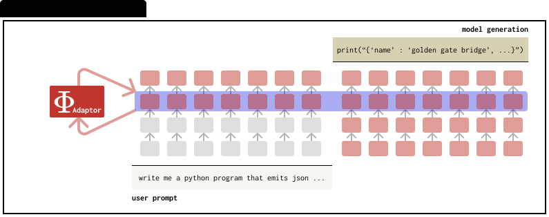

quick links
On representation steering
July 12, 2025
tl;dr.
Introduction.
Language models (LMs) can be steered toward desired behaviors through the following primary approaches: prompting guides models via carefully crafted input instructions, steering vectors manipulate internal representations through rank-1 activation addition, parameter-efficient fine-tuning methods (PEFTs) adapt model behaviors by updating a small subset of parameters, and representation finetuning methods (ReFTs) finetune specific representations within the model's intermediate layers.
Recently, AxBench [1] was proposed to benchmark steering methods from these four types systematically in a concept-based steering scenario for open-ended instruction following (e.g., steering an LM to always mention "golden gate bridge" when answering user queries).

One key takeaway from AxBench is that representation steering methods, although providing interpretable representation edits, lag behind simple prompting baselines. Since the release of AxBench, there are a number of notable new steering methods that try to push the frontier of steering methods, showing promise but not representing breakthroughs. In this blog post, we argue that future works in representation steering methods should also consider computational efficiency in order to make a convincing case as alternatives to prompting, lightweight finetuning, or inference-time scaling techniques.
Efficiency of LM steering methods.
We first introduce these methods and outline two aspects: memory and compute costs. We leave out the performance metric for now, so we can compare these methods assuming that optimal performance of these methods is very similar.
| Symbol | Meaning |
|---|---|
| x | prompt length (tokens) |
| L | number of transformer layers |
| dk, dv | key & value dimensions |
| H | hidden size / model width |
Prompting.

LMs are heavily post-trained to follow given instructions. As a result, prompting is the de facto way of controlling LMs. For instance, if one wants to personalize a LM to always respond as if itself is the golden gate bridge, one could add a system prompt that is prepended before the user prompt as “when answering, always mention golden gate bridge”. For more precisely steering behaviours, one might require longer system prompts.
Memory costs. The run-time memory cost is the size of the key–value (KV) cache created by the prompt (assuming a vanilla KV-cache implementation):
M = x ⋅ (dk + dv) ⋅ L
This cost grows linearly with the number of steering prompt tokens. Yet the total context length—system prompt + user prompt + model generation—now routinely spans thousands (and, with techniques like infinite attention [2] or external memory modules [3], even millions) of tokens. To visualize the impact, we plot the percentage memory overhead introduced by various steering prompt sizes as a function of total context length:

The curve drops off rapidly: once the total context exceeds a few thousands tokens (the norm for modern LMs with inference-time scaling), a 50- to 400-token steering prompt adds < 5 % KV-cache overhead—and < 1 % beyond 16 k tokens – making the memory cost essentially negligible in realistic settings.
Compute costs. Besides run-time memory, a steering prompt also adds extra FLOPs each time the model decodes a token, because the query for that new token must attend over the prompt’s additional K/V vectors.
For one decoding step, we can write out the additional FLOPs for processing the additional steering prompt tokens as:
ΔFLOPsprompt = xp ⋅ L ⋅ (2dk + dv)
As noted in [4], the FLOPs spent in MHA is only a tiny fraction of the full forward pass. We can write out the full forward pass FLOPs as:FLOPsbase = L ⋅ [ 4H2 + C (2dk + dv) ]
where C is the total context length (system + user + generation, including the steering prompt).
overhead% ≈ xp (2dk+dv) / C(2dk+dv) + 4H2 ⋅ 100
We can further contextualize the compute costs overhead by considering a typical 7-B parameter model (e.g., H=4096, dk=dv=64). For a 16k context length, a 50-token steering prompt adds 0.0001 % overhead, and a 400-token steering prompt adds 0.001 % overhead. These are negligible in practice.
| Length C | xp = 50 | xp = 100 | xp = 400 |
|---|---|---|---|
| 512 tokens | 0.20 % | 0.39 % | 1.56 % |
| 4,096 tokens | 0.03 % | 0.06 % | 0.24 % |
| 16,384 tokens | 0.008 % | 0.016 % | 0.06 % |
Steering vectors.

Steering vectors [5] place a rank-1 activation addition intervention in the middle of the LM forward pass, making minimal linear edits of LM representations. Given any hidden representation h, an activation addition intervention adds in a scaled rank-1 vector in-place as:
Φ(h) = h + α · w1
Memory costs. The memory overhead is a single vector. Similar to prompt steering, the memory overhead with respect to context length can be written as:
overhead% = H / C · L · (dk + dv) × 100
where the denominator contains the KV cache memory for the whole context. For a typical 7B model (H=4096, dk=dv=64, L=32, C=4096) that ratio is roughly 0.02% — so the rank-1 vector's memory footprint is essentially negligible. To compare with prompt steering, the overhead ratio is roughly 2.5% conditioned on the steering prompt having 100 tokens. There are some savings in terms of absolute numbers, but again, the overall saving is relatively small when considering the memory required for the context.
Compute costs. Unlike prompt steering, the compute overhead comes from the additional FLOPs of the activation addition step. Thus, the overhead can be written as:
overhead% ≈ H / L · [4H2 + C · (2dk + dv)] × 100
Similar to prompt steering, we can further contextualize the compute costs overhead by considering a typical 7-B parameter model (e.g., H=4096, dk=dv=64):
| Total context C | Overhead (%) |
|---|---|
| 512 tokens | 0.00019 % |
| 4,096 tokens | 0.00019 % |
| 16,384 tokens | 0.00018 % |
PEFTs.

Instead of a single rank-1 vector, an adaptor inserts a low-rank update AB⊤ (two H×r matrices) at one transformer layer, making a slightly richer—but still lightweight—edit to the activations. As a result, both the memory and compute overhead is the same as steering vector with a multiplier upfront.
Memory costs. A LoRA adaptor stores two H × r matrices, A and B, whose product forms a rank-r activation update. Because both matrices live on GPU memory, the overhead looks just like the steering-vector case—except multiplied by 2r. With r=8 on a 7B model (H=4096, dk=dv=64, L=32), that is roughly 0.39% at a 4k-token context.
Compute costs. Similar to steering vector, the compute overhead is similarly minimal: the adaptor performs one low-rank projection per token at a single layer, adding 2rH FLOPs, resulting in an additional FLOPs table as:
| Total context C | Overhead (%) |
|---|---|
| 512 tokens | 0.003 % |
| 4,096 tokens | 0.003 % |
| 16,384 tokens | 0.0029 % |
ReFTs.

Unlike adaptors operating on model weights, ReFT operates on representations (i.e., it selects where to edit representations with learnable interventions). Specifically, ReFT focuses on editing user prompt tokens. As proposed in the original ReFT paper, the intervention usually involves low-rank edits, similar to LoRA in terms of parameterization, involving AB⊤ (two H×r matrices).
Memory costs. ReFT takes up the same extra memory as LoRA during inference time as they both have the same parameterization. With r=8 on a 7B model (H=4096, dk=dv=64, L=32), that is roughly 0.39% at a 4k-token context.
Compute costs. Since ReFT operates on the prompt token representations, the additional FLOPs for generating a new token is essentially 0.
| Total context C | Overhead (%) |
|---|---|
| 512 tokens | 0.0 % |
| 4,096 tokens | 0.0 % |
| 16,384 tokens | 0.0 % |
Beyond steering performance.
Our analysis shows that while representation-level approaches (rank-1 vectors, LoRA, ReFT) have narrowed the gap, they still lag prompting on AxBench. More importantly, although many existing representation-steering papers claim—somewhat hand-wavingly—that "representation steering is very cheap," this mindset is usually unfounded. A 50–400-token steering prompt adds less than 0.06 % compute or KV-cache overhead once the total context exceeds 4k tokens, and less than 0.01 % at 16 k, so the relative cost of prompting vanishes as windows scale. By contrast, vector- or adaptor-based edits, although lightweight (~0.02–0.39 % memory), still require extra checkpoints and integration effort.
Prompting has limitations. Large context windows shrink the efficiency gap, but prompting remains vulnerable to prompt-injection and jail-breaking attacks that can override or dilute suppression prompts. Reference-free Preference Steering (RePS) [6] addresses this: in suppression mode it matches the standard language-modeling objective on Gemma-2 and surpasses it on the larger Gemma-3 variants, all while resisting the prompt-based jailbreaks that defeat prompting. These findings suggest that representation-level steering can provide a safer, interpretable, and more robust alternative to prompting when dependable suppression is needed.
Conclusion.
In this blog post, we argue that future works in representation steering methods should also consider computational efficiency in order to make a convincing case as alternatives to prompting. We hope this analysis can help guide future research in this direction.
How to Cite
Bibliography
BibTeX
Acknowledgements
We thank Aryaman Arora, Chris Potts, and Chris Manning for helpful discussions and feedback on this blog post.